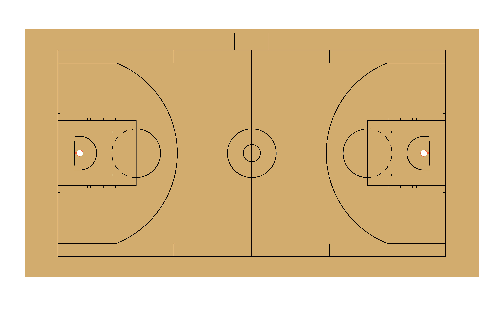

Welcome to sportyR! I’m Ross Drucker, the author of the
sportyR
package. My aim with this package is to provide high-quality, reliable,
baseline plots to use for geospatial analysis of sports data. I’m
excited to showcase some of the main functionalities of the package
here, as well as continue to develop the package to meet the needs of
the sports analytics community.
Installing R, RStudio, and sportyR
(This section courtesy of Saiem Gilani. Give him a follow!)
- Head to https://cran.r-project.org
- Select the appropriate link for your operating system (Windows, Mac OS X, or Linux)
- Windows - Select base and download the most recent version
- Mac OS X - Select Latest Release, but check to make sure your OS is the correct version. Look through Binaries for Legacy OS X Systems if you are on an older release
- Linux - Select the appropriate distro and follow the installation instructions
- Head to RStudio.com
- Follow the associated download and installation instructions for RStudio.
- Start peering over the RStudio IDE Cheatsheet. An IDE is an integrated development environment.
- For Windows users: I recommend you install Rtools. This is not an R package! It is “a collection of resources for building packages for R under Microsoft Windows, or for building R itself”. Go to https://cran.r-project.org/bin/windows/Rtools/ and follow the directions for installation.
sportyR is live on CRAN, and the most recent release can
be installed by running:
# Install released version from CRAN
install.packages("sportyR")If you’re more into the development version of the package, try this:
# Install development version from GitHub
devtools::install_github("sportsdataverse/sportyR")Once the library is installed, be sure to load it into the working environment.
Understanding and Exploring the Package
The package itself is really an extension of ggplot2, but the
aim is to focus specifically on a sports playing surface. So that begs
the question: what sports can we plot using sportyR?
You’re in luck: these kinds of questions are natively answered by
what I’ve called the cani_{question}() family of functions.
They’re designed to answer questions like
Can I plot a soccer pitch?
or
Can I plot a PHF ice rink?
and that’s the exact syntax you can follow to have the package answer those questions. Here’s an example:
# Find out if you can plot a soccer pitch
cani_plot_sport("soccer")
#> geom_soccer() can be used to plot for the following leagues: EPL, FIFA, MLS, NCAA, NWSLor
# See if a league comes pre-packaged with sportyR
cani_plot_league("PHF")
#> A plot for PHF can be created via the geom_hockey() functionI’ll highlight the fact that these are case-insensitive searches. Ask away to your heart’s content!
There’s one other cani_{question}() function I’ll
highlight more in a bit, but first let’s start acting on the answers to
these kinds of questions.
The geom_{sport}() Functions
Now that we can ask questions to the package and get answers, let’s
start using this information to make plots. Say for example we’re
interested in drawing a regulation NBA
basketball court. sportyR seeks to make this as easy as
possible:
# Draw a regulation NBA basketball court
geom_basketball("nba")
Easy as that to get started. Here’s a quick overview of the arguments
(which are included for all of the geom_{sport}()
functions):
league: This is a required parameter, butcustomis a viable value for any sport. As a quick note, using thiscustomoption will require you to specify all parameters of the surface you’re looking to create. This is case-insensitivedisplay_range: This automatically “zooms” in on the area of the plot you’re interested in. Valid ranges here vary by sport, but can be found by calling?geom_{sport}and reading about the display rangesx_transandy_trans: By default, the origin of the coordinate system always lies at the center of the plot. For example,(0, 0)on a basketball court lies along the division line and on the line that connects the center of each basket. If you want to shift the origin (and therefore the entire plot), usex_transandy_transto do so{surface_type}_updates: A list of updates to the parameters that define the surface. I’ll demo how to use this to change a hockey rink in a different vignette, but I’ll call this out herecolor_updates: A list that contains updates to the features’ colors on the plot. These are named by what the feature is, usingsnake_caseto specify the names. To get the list of color names you can change, try runningcani_color_league_features()with your desired leaguerotation: An angle (in degrees) that you’d like to rotate the plot by, where +is counterclockwisexlimsandylims: Any limits you’d like to put on the plot in the x and y direction. These will overwrite anything set by thedisplay_rangeparameter{surface}_units: If your data is in units that are different than how the rule book of the league specifies the units (e.g. you’ve got NHL data in inches, but the rule book describes the rink in feet), change this parameter to match the units you’ve got your data in. You’re welcome to change the units of the data as well, but this is provided for convenience